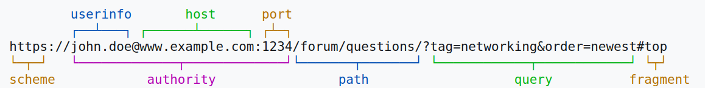

HTTP заявки и web услуги
Web технологии, спец. Информационни системи и Информатика, 2024/25 г.
Тази презентацията е достъпна под лиценза Creative Commons Признание-Некомерсиално-Споделяне на споделеното 4.0 Международен
Hypertext Transfer Protocol (HTTP)
OSI модел

SyamilAshri at English Wikibooks, CC BY-SA 3.0
Uniform Resource Locator (URL)

HTTP
- Приложен слой (application layer)
- Клиент-сървър модел
- Заявки (requests) и отговори (responses)
HTTP заявка
GET /bg/razpis HTTP/1.1
Host: www.fmi.uni-sofia.bg
Accept: */*
- метод
- цел на заявката
- протокол
- заглавка
HTTP отговор
HTTP/1.1 200 OK
Date: Fri, 04 Apr 2025 09:32:12 EEST
Content-Type: text/html; charset=utf-8
Content-Length: 12062
<!DOCTYPE html>
<html lang="bg" dir="ltr"...
- протокол
- статус код и текст
- заглавки
- тяло
HTTP заявка с тяло
POST /kontakti
Host: www.fmi.uni-sofia.bg
Content-Length: 100
Content-Type: application/x-www-form-urlencoded
name=Trifon&email=triffon@...
HTTP методи
- безопасни (safe)
- GET
- HEAD
- TRACE
- OPTIONS
- идемпотентни
- PUT
- DELETE
- други
- POST
- PATCH
- CONNECT
HTTP статус кодове
- Информация (1xx)
- Успех (2xx)
- Пренасочване (3xx)
- Грешка при клиента (4xx)
- Грешка при сървъра (5xx)
HTTP заглавки (headers)
| Клиент | Сървър |
|---|---|
| Content-Type, Content-Length | |
| Cookie | Set-Cookie |
| Authorization | WWW-Authenticate |
| Origin, Access-Control-Request-* | Access-Control-Allow-* |
| Cache-Control, Expires | |
| If-Modified-Since, If-Unmodified-Since | Last-Modified |
| If-None-Match, If-Match | ETag |
Web услуги
Какво представляват web услугите?
Технология за обмен на данни по интернет, които са предназначени за машинна обработка
- Обикновено използва HTTP
- Данните са в четим формат удобен за машинна обработка: XML, JSON
- Клиентът обикновено обработва данните, вместо директно да ги визуализира
Ресурсно-ориентирани архитектури (ROA)
- Сървърът предоставя колекция от ресурси
- Клиентът достъпва и манипулира ресурсите
- Клиентът задава идентификатор на ресурс и избира каква операция да приложи над него
REpresentational State Transfer (REST)
- ресурсно-ориентирана архитектура за уеб услуги
- клиентът задава първоначален идентификатор на ресурс
- сървърът винаги отговаря с представяне (representation) на обект
- обектът може да съдържа идентификатори на други ресурси
- не е нужно сървърът да пази история на „разговора“ с клиентите
- не е нужно клиентът да знае с кой точно сървър си говори
- унифициран интерфейс за комуникация
Добри практики за REST
- Използване на JSON формат
- HTTP методите са глаголи, описващи операциите с ресурсите:
POST,GET,PUT,DELETE - ресурсите се означават със съществителни:
/books,/status - колекциите са в множествено число, индивидуални обекти – в единствено
- свойствата се означават с вложени пътища:
/books/author - ресурсите се избират с идентификатор в дадена колекция:
/books/5231 - представянето се контролира с параметри:
/books?sort=asc,/posts?tags=fmi
OpenAPI и Swagger
OpenAPI е формат за описание на API
Swagger е набор от инструменти за разработка, описание и тестване на API